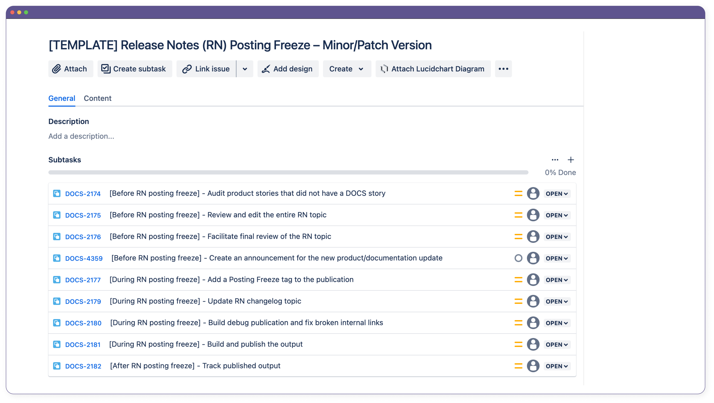
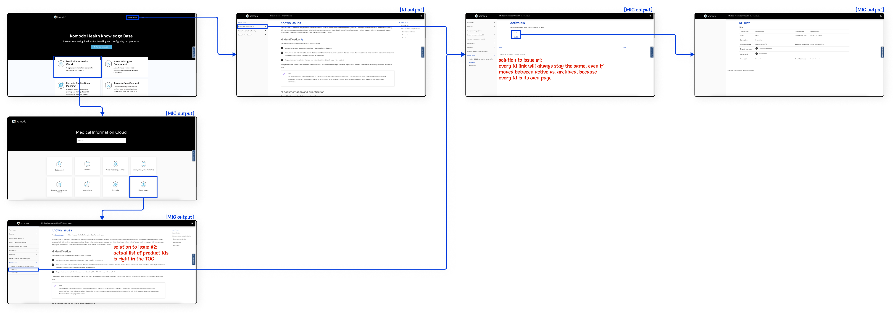

Technical Writer
December 2021 – Present
GitHub, Jira, Lucidchart, Paligo, Salesforce, Snagit, Screaming Frog
As of June 2024, I have contributed to all of the content on the KCC documentation site, including writing, editing, and peer reviewing. For content that I have written from scratch, you may reference the following pages:
I joined Komodo Health (“Komodo”) in December 2021 and have been the sole technical writer for the Komodo Care Connect (KCC) product since early 2022. Migrated from the Patient Journey Navigator (PJN) accelerator and previously known as the Patient Support Platform (PSP) product, KCC is one of Komodo’s transactional (Tx) apps built with Salesforce that empowers patient services teams to support patients through targeted treatment and care programs.
Below, I describe my high-level approach to writing the release notes and product documentation for KCC V1, including the initial major release as well as all of its subsequent minor and patch releases.
The first step to documenting any product is to understand the product. For KCC, this meant understanding both the underlying Salesforce platform that the KCC product is built on as well as the overall context and space in which the KCC product is built for.
The second step to writing any documentation is to understand the target audience. For the KCC product documentation, this meant understanding the system administrators and Apex developers who need to configure, customize, and extend the KCC product to meet their specific business goals.
Both of these steps implied that I needed to develop a solid enough understanding of the Salesforce foundation in order to document the intricacies of the KCC product. This became the most challenging part of writing the KCC product documentation for me as I struggled to even understand the fundamental relationship between objects and custom metadata types in Salesforce. Even the knowledge I had previously gained from delivering the PUBS user guide proved to be insufficient for starting a KCC admin guide. For instance, while I may have only needed to list the primary PUBS objects so that PUBS users knew where and which data were stored, I now also needed to document the different KCC custom metadata types that manage all of the standard and custom objects so that KCC admins could configure how the data are stored and displayed.
I tried to take more Trailhead courses on my own to better understand the underlying Salesforce platform but quickly realized that I needed to be more proactive with my approach. I ultimately scheduled several calls with members of the legacy PJN team as well as people in the new KCC team to ask fundamental questions about Salesforce. I also created Lucidchart diagrams to better visualize the relationships among the different entities in the KCC product. In doing so, I was finally able to ramp up to Salesforce in the context of the product that I eventually needed to document.
The Lucidchart that I had created and annotated with help from PJN and KCC team members. I have redesigned it slightly for this write-up. I use red to call out my questions and blue to represent my notes. The messiness of this diagram is an indication of my confusion at the time.
In addition to Salesforce, I also had to learn about the current state of the KCC product that was migrated from the PJN accelerator, including all of the existing features as well as its typical use cases and user flows. I was very fortunate that there was quite a bit of existing documentation on the legacy PJN accelerator for me to reference and that many of the KCC team members were also learning the product for the first time. I found it really fun and rewarding to get on hour-long calls with some members of the KCC team just to try out different features and user flows together.
To know which parts of the KCC product that I needed to pay particular attention to, I also regularly consulted the live documentation of the Medical Information Cloud (MIC) product, which is Komodo’s first Salesforce Tx app. In doing so, I realized, for instance, that I needed to create entity relationship diagrams (ERDs) for all of KCC’s custom objects and custom metadata types. I received a lot of guidance from the technical writer who created the ERDs for MIC and eventually began creating my own ERDs for KCC in Lucidchart.
A simple ERD for the Consent object in KCC that I eventually created. It showcases the relationships among the Consent custom object from KCC, the Account, Case, and Data Use Purpose standard objects from Salesforce, and the Envelope Status third-party object from DocuSign.
Because KCC is the productization of PJN, most of the KCC team’s Jira tickets focused on testing and packaging the legacy PJN features for the initial KCC V1 release. As such, I also focused on documenting the major legacy features that were migrated into the product. I prioritized features of high visibility and deprioritized functionality that customers may not use immediately after the launch of the product.
For each major feature, I performed the following steps:
I faced some difficulty enforcing step #5 with the KCC team because many of the engineers have never worked with technical writers before. To relieve some confusion, I wrote up an internal Confluence page to explain how engineering teams for the Tx apps can work with the Technical Writing team.
A snapshot of the Confluence page I wrote for the Tx engineering teams. This page has been edited since I first published it in 2022.
In addition to documenting the major features, I also had to perform several one-time tasks to prepare for KCC’s first ever release, such as:
Only after I resolved all of the feedback from the SME and peer reviews and finished the one-time tasks was I finally able to publish the KCC documentation alongside the KCC release. I officially published the KCC V1 product documentation on Komodo’s external documentation site in July 2022 and subsequently received the following peer bonuses from the product manager and an engineer.
The peer bonuses I received from the product manager and an engineer.
After KCC V1 went live, the engineering team continued to test more features in the KCC product that were migrated from the PJN accelerator but did not ship with the first release. The engineers also proceeded to implement new functionalities, enhance several existing components, and fix a number of bugs. Instead of shipping the updates in a new major release, though, the KCC team decided to deploy several minor (x) and patch (y) releases as V1.x.y.
I had frequently referenced the MIC documentation for guidance when writing for KCC V1 and wanted to do the same for KCC V1.x.y. However, I quickly noticed that MIC traditionally only released major versions, not minor or patch versions, and that I would need a different writing approach for KCC to distinguish between features in the original V1 major release and features in the subsequent V1.x.y minor and patch releases. After some thought, I decided to add a version number to the section title of each new and updated feature and add a version column to each metadata table as appropriate. This way, internal and external stakeholders could easily determine the specific release in which a feature or entity was added, deprecated, or updated.
Screenshots of the KCC V1.x.y release notes that I eventually published and iterated on. I included a version number to the title of each new feature and added version columns to the tables of the new, deleted, and modified entities.
As the engineering team continued to add new features and enhancements to the KCC product that did not previously exist in the PJN accelerator, I needed to identify the specific product updates that required documentation. Traditionally, either the product manager or the engineering lead would take on this role. However, because I wanted to be more involved with the KCC team and because I felt comfortable owning the responsibility, I volunteered to take this job on and was given the green light to do so.
From working with the rest of the Technical Writing team, I realized that there are generally three types of documentation that I am expected to write for the Tx apps:
I also realized that, typically:
With these guidelines in mind, I began to tag specific KCC Jira tickets that I thought required documentation and worked with the KCC team to confirm my assumptions. I also began to attend their backlog grooming and sprint planning sessions to get ahead in identifying the tickets that I potentially needed to document for. Joining these meetings was helpful because I could develop a high-level understanding of what features were going to be developed, how those features were going to be implemented, and what impact those features were going to have on customers. I also started to attend the KCC team’s daily standups to stay up to date on any tickets that may have been created or added after the start of a sprint.
For each ticket that I marked as requiring documentation, I waited for the engineers to finish developing, testing, and merging their code changes before I began researching and writing. For larger features, I waited until most, if not all, of the tickets for the feature had been completed. Then, I:
If I had any questions about a ticket, I either reached out to the engineer who worked on the ticket through Slack or asked for clarification during the daily standups.
Only after I established a solid understanding of a ticket did I begin to actually put pen to paper, using Paligo to write and manage all of my content and using Snagit to capture and annotate any screenshots.
As I documented the product updates implemented by the engineering team, I asked myself the following questions:
For example, if a new entity was added, I needed to remember to create new schema tables, add new fields to existing schema tables, and/or create and update the ERDs. Similarly, if any entity was deprecated, I needed to remember to add warnings throughout the product documentation where the entity was mentioned. This is because the Tx product and engineering teams typically support the two latest major versions of each Tx app, so I cannot immediately remove information about a deprecated entity from the product documentation.
A snapshot of the warnings I had added to a custom metadata type when a single field was initially deprecated and when the entire entity was also deprecated.
After I finished drafting the release note and/or product documentation for a ticket, I would send my content first to a SME and then to another technical writer and make edits as necessary. All of my documentation must go through at least one SME review and one peer review before I can publish any content onto our external documentation site to ensure both accuracy and readability, respectively.
To align with each product release, our Technical Writing team has a posting freeze process during which we compile and publish all of the documentation changes for the major, minor, or patch release. We call it a “posting freeze,” similar to how engineering teams may have a “code freeze,” because we cannot freely publish any Paligo output while we merge our changes, update our table of contents, and more. The overall posting freeze process was already established before I joined Komodo, but I worked with the other technical writers to revamp several required steps and tasks in the process. For example, we have since removed the step to request for the list of schema changes from the engineering lead because we gather and document this information as part of our standard product documentation process. Additionally, we have added a task to create a new section in the product’s announcements page when there are major updates to the product or documentation. There are also several differences in the posting freeze tasks for publishing the release notes and product documentation of each major, minor, or patch release, and some tasks must be completed before or after the actual duration of the posting freeze. For instance, only after the latest documentation changes have been published can we use Screaming Frog to crawl the documentation site to check for any broken external links.
A sample list of the posting freeze tasks that must be completed to publish the release notes of a minor or patch version. On each task, there is an indication of whether the task should be completed before, during, or after the posting freeze period.
In addition to the scheduled major, minor, and patch versions for KCC, I also document any known issues that may be found in the product.
A known issue (KI) is a bug found in a live product that is deemed severe or common enough to require acknowledgement from the product team that the bug exists and potentially a hotfix release from the engineering team to resolve the bug. When I asked Tx team members how they determined if a bug was “severe or common enough,” I noticed there was hesitation and inconsistency in their responses and knew immediately that this would raise confusion amongst customers as well. I subsequently proposed documenting and publishing a page dedicated to breaking down this information for both internal and external stakeholders to know. Everyone was on board with this idea, so I drafted and published a KI definition page on the external documentation site for each TX app.
A snapshot of the KI definition page I wrote and published.
With this freshly in my mind, I proposed creating three KIs for KCC when the engineering team found issues updating KCC V1.1.0 to Salesforce Spring ‘23. I was given the green light to do this, so I documented, published, and since archived the KIs on the external documentation site.
Two Tx product and engineering leads later expressed concern that individual KIs were difficult to find in Komodo’s external documentation site. The link to the list of KIs was embedded in a sentence on the KI definitions page, and the link of each active KI would break once it became an archived KI.
The original user flow for finding KIs in the documentation site. The screenshots use the MIC documentation, but they also applied to the KCC documentation.
I agreed with their sentiment and looked into how our Technical Writing team could help improve the user experience of finding both active and archived KIs in the documentation site. I did some testing with HTML and JS in Paligo and designed two different user flows in Figma. At a high level, the two user flows were similar in that:
However, the first user flow would keep the KIs in a KI output that is separate from each product output while the second user flow would move the KIs into each individual product’s output. The former would require less work from the Technical Writing team to move all of the necessary content, but the latter meant that the links would stay consistent within the product’s output. (Links from a KI output would contain `/ki/` while links from a product’s output would contain `/kcc/` or `/mic/`.)
The first proposed solution for updating the KI user flow in the documentation site. The screenshots use the MIC documentation instead of the KCC documentation.
The second proposed solution for updating the KI user flow in the documentation site. The screenshots use the MIC documentation instead of the KCC documentation.
After sharing both proposed solutions to the Tx product and engineering leads, I received feedback to proceed with the second user flow, which was my preferred design as well. I made all of the necessary code changes and published new outputs for all of the products.
Just like how no product will ever be completely void of bugs, no documentation will ever be “perfect.” Even though the rest of the Technical Writing team and I try to be as thorough in our writing and reviewing process as possible, we cannot guarantee that our documentation will always be entirely accurate and readable. Knowing this, we have embedded a feedback form into the documentation site for internal and external stakeholders alike to submit suggestions. Upon the submission of their feedback, our team gets a Jira ticket with the information they entered. We groom and prioritize these tickets regularly and make ad hoc documentation updates accordingly.
As the first product I have ever documented as a technical writer, KCC will always be dear to my heart. I have learned so much from and with the team, both in terms of tooling and processes. In particular, I learned about Salesforce, the patient services space, and the importance of asking questions early on to more quickly and effectively ramp up to a new product. I also realized and appreciate how receptive everyone is to my ideas. Specifically, I was able to share my concerns on the existing process for identifying bugs as KIs and took part in revamping the posting freeze process with the other technical writers. I’m really glad to have met everyone who works on the various Tx apps and look forward to seeing the future of these products!